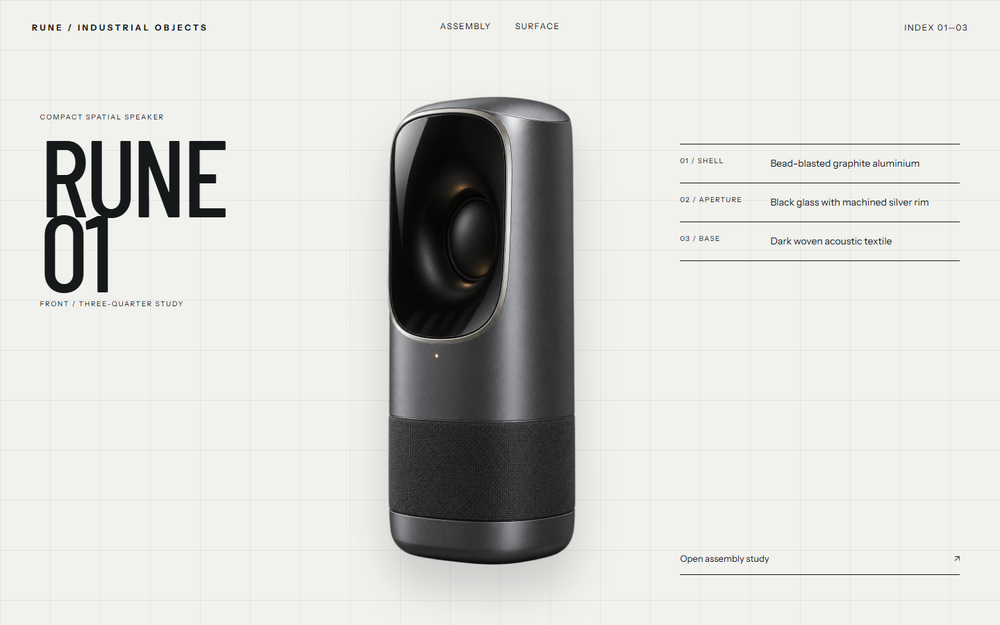
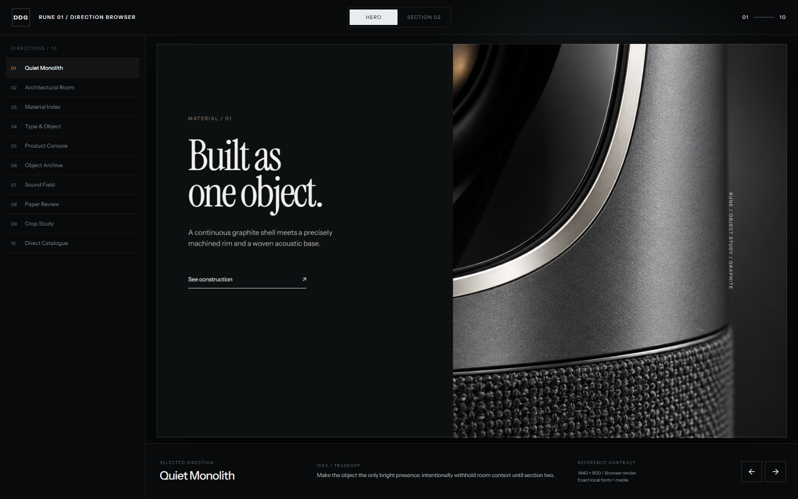

Use the right source.
Provided asset, generated subject media, or no imagery at all—the brief decides.
Provided asset, generated subject media, or no imagery at all—the brief decides.

HTML, CSS, exact fonts and the final local assets at one declared viewport.

Hero and section two stay large enough to judge, with the main tradeoff stated.